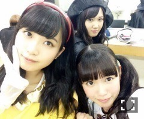
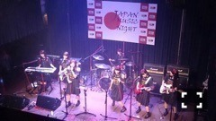

| 2016/01 09 Sat | ひめたん-0o0-その603 |
2016年の乃木坂ちゃんカレンダーは
もう届きましたか(´｡•ω•｡`)？
去年このカレンダー
いただいたので飾ってみたんだけれど
メンバーが可愛い故にめくれなくて
結局しばらく1月のままにしてた記憶が。
でも、ひめ今年は11月に載ってるので
それまでワクワクしながら
めくってくれたら嬉しいです～
未央ちゃん、かなりん、ひめたんです
おお60%サンエト。
サンエトちゃん2016年も
何かできたらいいな
カレンダー11月の頃私たち何してるかな。
さて、この前は
さゆまりとお泊まりしたよ～♪
鍋パーティーしたよ～
この日は珍しく
中元が終始ツッコミにまわってました。
遅くなっちゃったけれど
さゆちゃんのお誕生日会もしたよー！
私たちらしい、のんびりとした時間を
過ごしました～
今度はうちにもおいでね(´｡•ω•｡`)
乃木神社で参拝してきました！
舞台「ヴァンガード」観てきました
愛未ちゃん素敵だった♡
千秋楽まで頑張ってね～！
と、こんな感じで
充実したお正月休みでした！
お仕事もたくさん頑張るぞー！

さて、明日は個別握手会、
明後日は全国握手会ですね。
両日とも幕張メッセです
寒いかもしれないから
あたたかくして来てね＼(^o^)／
個別握手会は18レーンです
明日は3部までの参加なのでお気をつけを！
全国握手会はひなちまとペア＼(^o^)／
ひなちまファミリーの皆さん
ひめとも仲良くしてくださいませ～
本日ソニレコ更新日～！
じょ～んがブログに書かなきゃ！と
本編で3度ほど言っていましたが
Kちゃんの妹枠が空いていたということで
Kちゃん、kaz、まい様、じょ～ん、おひめ
ソニレコ兄妹の誕生(^o^)かな？
ひめ一番末っ子だ～♡
あと、あれです書き初めしてます！
まいまいの卒業発表。
何より寂しい(´;ω;`)
一期生は乃木坂が始まってから
怒涛の5年間を共に過ごしてきました
だから本音を言うと凄く、凄く寂しい。
寂しいけれど、それがまいまいにとって
前向きな決断なのだとしたら
残されたメンバーは笑顔で送り出すことが
ベストな答えなのかな。
まいまいは「聖母」と
呼ばれるようになったけれど
本人はそんなことないと言っていたけれど
本当に周りをよく見ているし、気を遣うし、
悔しい時とか悲しい時とかも
周りを巻き込むんじゃなくて
一人で静かに涙を流してた印象があります。
誰に対しても壁を作ることなく接してくれて
誰かのためなら自分は二の次なスタンスで
同じ目線に立って話そうとしてくれてたのを
みんな知っています。
いや、～してくれてと書いたけれど
多分能動的にできちゃうというか
無意識なんだろうなあ
そんなまいまいだから
お姉さんメンバーも年下メンバーも
一期生も二期生も
みんなまいまいのことが大好きです。
残されたこの数ヶ月は
誰のためでもなく、自分のために
悔いなく楽しく
過ごしてほしいなと思っています。
まいまいの「たんひめ～♡」って
抱きついてくれるの好きです(´,,•ω•,,｀)
ソニレコで私がまだゲストだった頃
まい様がホストとして
本番前にリラックスさせてくれたように
らじらー来てくれた時に
生放送で緊張してたまいまいを
私は上手くアシストできていたのかな？
まいまいが臨むなら
またいつでもらじらー来てね！
もう狩ったりしないので(笑)
ゆっくりお話聞かせてください。


(＊´・ω・＊)
コメント(763)
2016/01/09 00:30